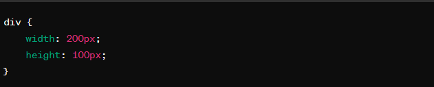
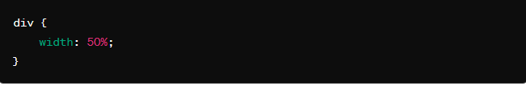
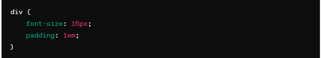
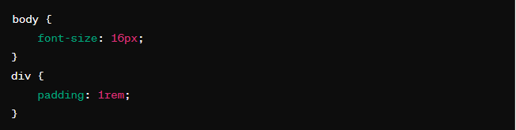
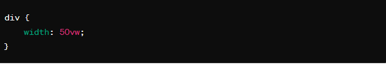
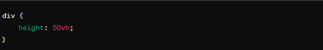
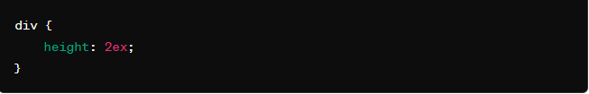
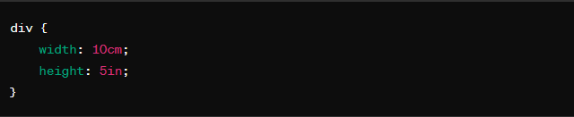

1-Defina y ejemplifique los distintos tipos de medida que se usan en Css3
En CSS3, hay diferentes tipos de medidas que puedes utilizar para especificar dimensiones como el ancho, alto, margen, relleno, etc. Aquí hay algunos ejemplos de los distintos tipos de medidas:
1.Unidades absolutas:
px (píxeles): Es una unidad absoluta y representa un píxel en la pantalla. Por ejemplo:

2.Unidades relativas:
% (porcentaje): Establece el tamaño relativo al tamaño del elemento padre. Por ejemplo:

em: Relativo al tamaño de la fuente del elemento. Por ejemplo:

rem: Similar a 'em', pero relativo al tamaño de la fuente del elemento raíz (root). Por ejemplo:

3.Unidades de viewport:
vw (ancho viewport): 1vw es igual al 1% del ancho del viewport. Por ejemplo:

vh (alto del viewport): 1vh es igual al 1% del alto del viewport. Por ejemplo:

4.Unidades de texto:
ex: Representa la altura de la letra 'x' en la fuente actual. Por ejemplo:

5.Otras unidades:
cm, mm, in, pt,pc: Unidades absolutas que representan centímetros, milímetros, pulgadas, puntos y picas respectivamente. Por ejemplo:

Cada tipo de medida tiene sus propias características y es útil en diferentes situaciones dependiendo de las necesidades de diseño y el comportamiento deseado en el diseño web.
2-Defina cada parte y que representa,de lo que ve a continuación:
.menu{
display:inline;
margin-left:130px;
margin-top: 25px;
margin:5px;
background-color:blanchedalmnond;
padding: 15px;
font-size:20px;
/* padding: ; */
}
Este es el significado de cada parte del código CSS que es el siguiente:
- .menu{}: Esto define una regla de estilo para todos los elementos HTML que tengan la clase "menu". Esto significa que cualquier elemento HTML con la clase "menu" aplicará estos estilos.
- Display: inline: Esto establece la propiedad de visualización del elemento. En este caso, el elemento se mostrará como un elemento en línea, lo que significa que ocupará solo el espacio horizontal necesario y no comenzará en una nueva línea.
- margin-top: 25px:Esto establece el margen superior del elemento en 25 píxeles. Habrá un espacio de 25 píxeles entre el borde superior del elemento y su contenedor.
- margin: 5px: Esta propiedad sobrescribe las propiedades margin-left y margin-top anteriores. Establece el margen en todos los lados del elemento en 5 píxeles. Esto significa que habrá un espacio de 5 píxeles en todos los lados del elemento respecto a su contenedor.
- background-color: blanchedalmnond;: Esto establece el color de fondo del elemento en "blanchedalmnond". "Blanchedalmnond" es un color predefinido en CSS que es una tonalidad de blanco ligeramente amarillento.
- padding: 15px: Esto establece el relleno del elemento en 15 píxeles en todos los lados. El relleno es el espacio entre el contenido del elemento y su borde.
- font-size: 20px: Esto establece el tamaño de la fuente del texto dentro del elemento en 20 píxeles.
- padding: ; */: Esto es un comentario CSS que no afecta al estilo. Puede ser útil para dejar notas en el código para referencia futura. En este caso, parece ser un comentario que ha sido desactivado (comentado) ya que está precedido por /* y seguido por */.
3-¿Cual es la diferencia en el valor de la propiedad display si uso inline o inline-block?
La propiedad display en CSS controla cómo se muestra un elemento en el diseño de la página.
Aca hay una descripción más detallada de cada uno:
display:inline:
Los elementos se mostrarán en línea, uno después del otro, sin comenzar en una nueva línea.
No se puede especificar un ancho o alto para el elemento.
El margen superior e inferior no afecta a los elementos adyacentes.
No se pueden establecer márgenes o rellenos en las direcciones superior e inferior.
Ejemplos de elementos en línea son , ,  , entre otros.
, entre otros.
display: inline-block:
Los elementos se muestran en línea, pero permiten ajustar el ancho y el alto, así como agregar márgenes y rellenos.
Se puede especificar un ancho y alto para el elemento.
Los elementos respetan los márgenes superiores e inferiores, lo que afecta a los elementos adyacentes.
Permite establecer márgenes y rellenos en todas las direcciones.
Es útil para elementos que necesitan comportarse como elementos en línea pero que también necesitan algunas características de los bloques, como los márgenes y los rellenos.
4-Indique las 4 alternativas de uso tanto para padding y para margin e identifique como funcionan.
Margenes:En el modelo de cajas, los margenes (margin) son los espacios exteriores de un elemento.El espacio que hay entre el borde de un elemento y el borde de otros elementos adyacentes, es lo que se considera márgen.
| propiedad |
valor |
Significado |
| Margin-top |
auto | |
Establece un tamaño de margen superior |
| margin-left |
auto | |
Establece un tamaño de margen a la izquierda |
| margin-right |
auto | |
Establece un tamaño de margen a la derecha |
| margin-bottom |
auto | |
Establece un tamaño de margen inferior |
Hay que recordar diferenciar bien los márgenes de los rellenos, puesto que no son la misma cosa. Los rellenos (padding) son los espacios que hay entre los bordes del elemento en cuestión y el contenido del elemento (por la parte interior). Mientras que los márgenes (margin) son los espacios que hay entre los bordes del elemento en cuestión y los bordes de otros elementos (parte exterior).El siguiente ejemplo para ilustrar el solapamiento de márgenes. Por defecto, si tenemos dos elementos adyacentes con, por ejemplo, margin: 20px cada uno, ese espacio de margen se solapará y tendremos 20px en total, y no 40px (la suma de cada uno) como podríamos pensar en un principio.
Rellenos o padding
Al igual que con los márgenes, los rellenos tienen varias propiedades para indicar
cada zona:
| propiedad |
valor |
Significado |
| padding-top |
0 | |
Aplica un relleno interior en el espacio superior de un elemento |
| padding-left |
0 | |
Aplica de un relleno interior en el espacio izquierdo de un elemento |
| padding-right |
0 | |
Aplica un relleno interior en el espacio derecho de un elemento |
| padding-bottom |
0 | |
Aplica un relleno interior en el espacio inferior de un elemento |
5-Defina e indique los distintos tipos de selectores que se usan en Css3
Al margen de la selección «básica» de elementos a través de CSS, que suele realizarse mediante clases e IDs, existe un amplio abanico de métodos para seleccionar elementos dependiendo de la estructura del documento HTML denominados combinadores CSS:
| Nombre |
Simbolo |
Ejemplo |
Significado |
| Agrupacion de selectores |
, |
p, a, div {} |
Se aplica estilos a varios elementos. |
| Selector descendiente |
|
#page div {} |
Se aplica estilos a elementos dentro de otros. |
| Selector hijo |
> |
#page > div {} |
Se aplica estilos a elementos hijos directos. |
| Selector hermano adyacente |
+ |
div + div {} |
Se aplica estilos a elementos que siguen a otros. |
| Selector hermano general |
- |
div - div {} |
Se aplica estilos a elementos al mismo nivel |
| Selector universal |
* |
#page * {} |
Se aplica estilos a todos los elementos. |
6-¿Que significa que Html5 trabaje con archivos externos?
Cuando se dice que HTML5 puede trabajar con archivos externos, generalmente se está haciendo referencia a la capacidad de HTML5 para incluir recursos como archivos CSS (hojas de estilo), archivos JavaScript, imágenes u otros medios desde ubicaciones externas al archivo HTML principal.
7-¿Que es una ruta absoluta y una relativa?
Una ruta absoluta es una dirección compelta que especifica la ubicación de un archivo o directorio desde la raiz del sistema de archivos.Por ejemplo, en sistemas Unix-like, una ruta absoluta podria ser "/home/usuario/archivo.txt".En contraste, una ruta relativa e una dirección que se especifica en relación con el directorio actual.Por ejemplo, si estas en el directorio "/home/usuario/" y quieres referenciar el archivo "archivo.txt" que esta en el mismo directorio, puedes usar la ruta relativa "./archivo.txt".Las rutas relativas son mas flexibles y portátiles, ya que permiten mover o copiar archivos y directorio sin tener que cambiar todas las referencia de rutas, mientras que las rutas absoluta son fijas y depeden de la estructura del sistema de archivos.
8-Defina y ejemplifique los distintos tipos de valores que puede tomar la propiedad color
La propiedad color en CSS se utiliza para definir eel color del texto dentro de un elemento HTML.
Puede tomar diferentes tipos de valores:
- Nombre de color: Puede utlizar nombres predefinidos para los colores como red,blue,green,entre otros por ejemplo:
color:red;
- Valores Hexadecimales:Representa colores mediante una combinación de números y letras.por ejemplo:
color:#FFA500;
- Valores RGB:Representan colores mediante la combinación de valores de rojos,verde y azul.Puede ser valores absolutos (0 a 255) o procentajes (0% a 100%).Por ejemplo:
color:rgb(255,0,0,0.5);
color:rbg(50%,75%,25%);
- Valores RBGA:Similar a RGB, pero con un componente adicional para la opacidad (alfa).La opacidad se especifica como un valor entre 0 (totalmente transparente) y 1 (totalmente opaco).Por ejemplo:
color:rgba(255,0,0,0.5);
- Valores HSL y HSLA:Representan colores mediante tono,saturación y luminosidad.HSLA tambien incluye un componente alfa para la opacidad.Por ejemplo:
color:hsl(120,100%,50%);
color:hsla(240,100%,50%,0.5);
9-¿Que es el modelo de caja, y en que se diferencia padding de margin?
Modelo de cajas: Es un concepto en CSS que se describe como se representa los elementos HTML en una página web.Incluye el contendio del elemento,el padding(relleno),el borde y el margin (margen).
El padding es el espacio entre el contenido del elemento y su borde, mientras que el margin es el espacio entre el borde del elemento y otros elementos adyacentes.(El padding afecta el interior del elemento y el margin afecta al espacio exterior del elemento).
10-Completa el proyecto iniciado en clases.